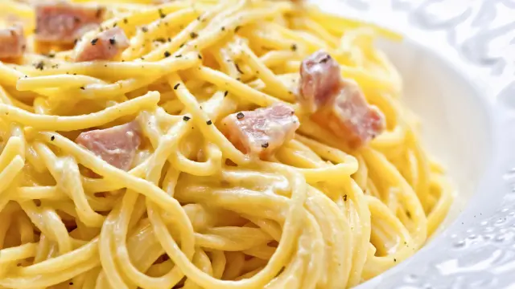

Carbonara Básica

Ingredientes
- 1 loncha de guanciale
- 50 g de pecorino romano (o parmesano)
- 1 huevo L
- 3 yemas L
- Pimienta negra recién molida al gusto
- Sal
- 150 g de spaghetti
Método
- Corta el guanciale en trozos pequeños y añádelo a una sartén fría sobre fuego alto.
- Mete la pasta en agua hirviendo abundantemente salada y cuécela siguiendo las indicaciones del paquete.
- Separa las yemas de los huevos y añádelas a un bol. Casca el huevo. Bate hasta que sea homogéneo.
- Añade el pecorino romano rallado y abundante pimienta negra. Mezcla todo.
- Cuando el guanciale esté dorado y haya soltado abundante grasa, retírala de la sartén y resérvala.
- Transfiere la pasta a la sartén directamente, dos minutos antes de que esté al dente, junto a un poco de agua de cocción.
- Mezcla efusivamente, emulsionando la grasa con el agua y añadiendo agua conforme la vaya absorbiendo, hasta que la pasta esté al punto deseado.
- Retira la pasta del fuego. Espera hasta que no se escuche ningún sonido viniendo de la sartén.
- Añade el guanciale y la mezcla de huevos, queso y pimienta. Mezcla efusivamente, creando la salsa.
- Sirve inmediatamente y finaliza con pecorino rallado y pimienta negra adicionales.